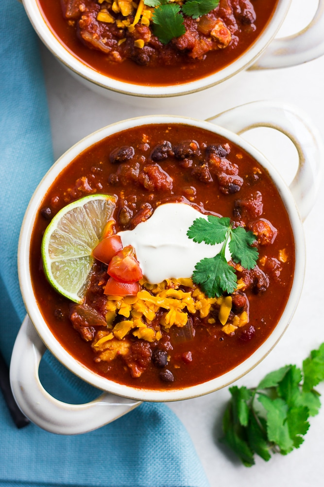

Vegan Chili 
Description
Meaty, flavorful and protein-rich, this chili is over-the-top delicious. Serve with vegan cornbread and vegan sour cream for the best results!
Ingredients
Meaty Tofu Crumbles
- 2 tablespoons soy sauce
- 2 tablespoons nutritional yeast
- 2 teaspoons chili powder
- 1 teaspoon smoked paprika
- (1) 14 ounce firm tofu
Chili
- 2 tablespoons olive oil
- 1 medium sweet onion, diced
- 3-4 cloves garlic, minced
- (2) 28-oz cans crushed tomatoes
- (2) 15-oz cans black beans, drained and rinsed
- (1) 15-oz can kidney beans, drained and rinsed
- 1 cup water
- 3 tablespoons chili powder
- 2 teaspoons ground cumin
- 1 tablespoon pure maple syrup
- 1 tablespoon cocoa powder
- 1 teaspoon smoked paprika
- 1/4 teaspoon cayenne pepper
- 1 teaspoon salt
Instructions
For the tofu crumbles:
- Preheat the oven to 350 degrees F and line a baking sheet with parchment paper or a silicone mat.
- In a large bowl, mix together the soy sauce, nutritional yeast, chili powder and smoked paprika. It will be pasty. Now crumble the tofu into the bowl with your hands, and mix together using a large spoon until well combined with the paste.
- Spread the tofu mixture evenly in the pan. Place in the oven and bake for 30 minutes, stirring the tofu halfway through. Once the tofu is in the oven, start the chili.
For the chili
- In a large pot over medium heat, add the olive oil. Add the chopped onion and sauté 3-4 minutes until translucent. Add in the garlic and cook 1 more minute, stirring constantly.
- Now add all the rest of the chili ingredients, except the tofu, and stir to combine. Bring to a boil, then lower the heat and simmer for about 20 minutes, until the tofu crumbles are done baking.
- If a thicker consistency is desired, use an immersion blender and blend just a few times. Do this before you add the tofu.
- Once the tofu crumbles are done, stir them into the pot. All done! Serve with vegan sour cream, cornbread, tortilla chips, cilantro, tomatoes, hot sauce, vegan cheese shreds and chives, if desired.